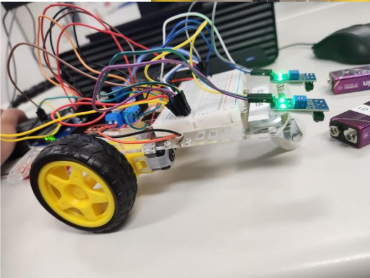
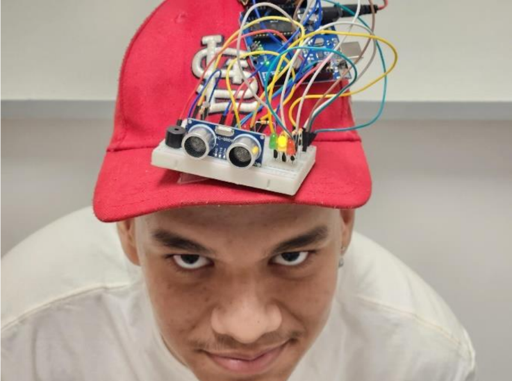
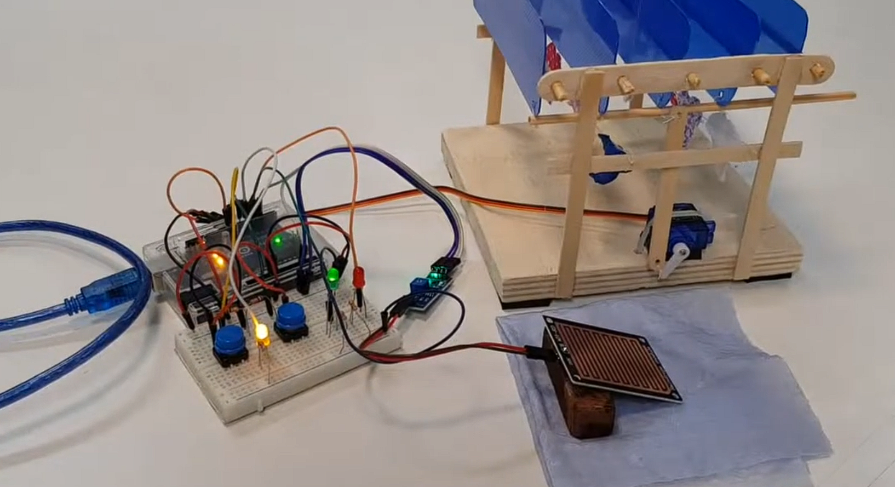

Foto do segue linha, um projeto divertido e complexo que nos divertiu muito. Utilizamos uma base, 3 rodas, 2 motores, baterias, o Arduino, a placa de ensaio e mais alguns materiais variados.

Foto do boné com detector de distância. Utilizamos um boné, o Arduino, os sensores, as saídas de áudio, as placas e mais alguns equipamentos variados.

Foto do varal que fecha sozinho por conta da chuva. Esse projeto foi desafiador por explorar nossa autonomia e capacidade de tomar decisões. Os materiais foram os mesmos, o diferente foi o sensor de água e os auxiliares.